Een Test
met meerdere items aanmaken/bewerken
Inhoudsopgave
Starten
met bewerken
Het Edit-paneel
Header
van het Edit-paneel
Bedieningspaneel
Een ITEM selecteren / testen
Instellingen
van deze test en Algemene instellingen van het programma
Instructietekst
van een test aanmaken/bewerken
Bedieningspaneel
Kies een ITEM-regel
Instellingen
van een geselecteerde ITEM-regel
Keuze van
Object typen:
Achtergrond
(bestand)
Achtergrond
(monokleur)
Grafisch
object (bestand)
Grafisch
object (geometrische vorm)
Invoer
(toetsenbord)
Invoer
(muis)
Invoer
(MPT-knoppenkast)
Invoer
(MPT-fingertapping)
Lampen
MPT-knoppenkast
Geluid
(bestand)
Stop
geluid
ResultaatMemo:
Tonen (1e keer)
ResultaatMemo:
Tonen (opnieuw)
ResultaatMemo:
Verbergen
Wachttijd
vast/random
Instelling
Early Responstijd
Stop
item
Sneller
werken met grafische objecten
Starten
met bewerken 
Onderdelen van de module NeuroPsychologische
Testen, dus ook het onderdeel
Een test bewerken of nieuw aanmaken,
worden altijd gestart vanuit de ID-Testorganizer.
Starten vanuit de ID-Testorganizer
gaat als volgt:
Zorg ervoor dat in het vak Modulen
NeuroPsycho is geselecteerd.
Om een nieuwe test aan te maken:
druk op de knop Nieuw onder het vak met de aanwezig protocollen.
Om een bestaand protocol te bewerken:
selecteer in het vak met de aanwezig protocollen de regel met het gewenste
protocol en klik dan op de knop Edit onder het vak.
In een venster wordt dan eerst gevraagd
of het een echte test betreft of een oefen-test.
Het
Edit-paneel
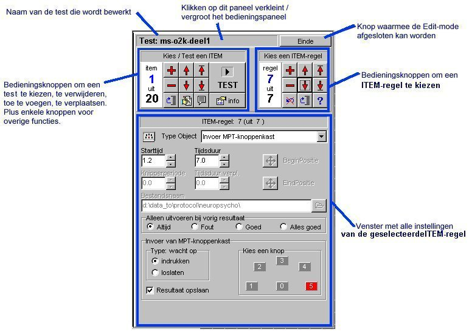
Header
van het Editpaneel
| Header van Editpaneel: Editpaneel
verkleinen/vergroten en knop Einde
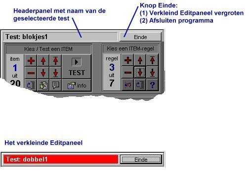
Headerpaneel
Hierin wordt de naam van de geselecteerde
test getoond.
Wanneer op het headerpaneel wordt
geklikt, dan verkleint het Editpaneel zodat alleen het headerpaneel (dat
is dan rood gekleurd) en de knop Einde zichtbaar blijven.
Wanneer de muis boven het rood gekleurde
headerpaneel wordt bewogen, dan verplaatst het Editpaneel zich naar de
onderzijde of bovenzijde van het scherm. Dit kan handig zijn om op een
scherm met resolutie 800x600 een grafisch object of de muiscursor in de
linkerbovenhoek van het scherm te kunnen plaatsen.
Het Editpaneel kan weer vergroot
worden worden door op de knop Einde te drukken òf door op een leeg
deel van de achtergrond te klikken.
Knop Einde
De knop Einde heeft meerdere functies.
Wanneer het Editpaneel verkleind is,
dan zorgt een klik op deze knop ervoor dat het Editpaneel weer wordt vergroot.
Wordt op dat moment de begin- of eindpositie van een grafisch object ingesteld,
dan wordt die actie eveneens beëindigd.
Anders wordt deze knop gebruikt om de
Edit-mode te verlaten. In een venster wordt gevraagd om een bestandsnaam
in te voeren waaronder het protocol op de harde schijf wordt opgeslagen.
Na klikken op de knop Opslaan wordt het bestand opgeslagen, na klikken
op de knop Annuleren wordt gevraagd om te bevestigen dat eventuele
wijzigingen niet bewaard moeten worden. Wanneer het protocol werd opgeslagen
op de harde schijf wordt vervolgens in een nieuw venster gevraagd om de
testnaam (omschrijving van het protocol) in te voeren. Voer hier eventueel
een nieuwe omschrijving in en klik op de knop OK om deze testnaam op te
slaan of klik op de knop Annuleren (dan wordt de oude testnaam gebruikt).
|
Bedieningspaneel
Een ITEM selecteren / testen
Een ITEM selecteren / testen
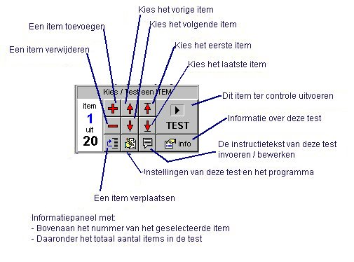
Zodra een ander item wordt geselecteerd,
worden wijzigingen in het huidige item automatisch opgeslagen in het protocol-bestand.
Een item
toevoegen
Taken worden altijd aan het einde
van de takenlijst toegevoegd.
(taken kunnen indien gewenst later
verplaatst worden).
Na klikken op de knop Een ITEM
toevoegen verschijnt een venster met de vraag "Wilt u het geselecteerde
item kopiëren en als basis gebruiken voor het nieuwe item ?".
Klik op Ja om deze keuze
te maken.
Kilk op Nee om hiervoor niet
te kiezen. Er wordt dan een nieuwe item aangemaakt met 1 regel: een zwarte
achtergrond op starttijd 0.
Klik op Annuleren om geen
item toe te voegen.
Een item
verwijderen
Verwijderde items worden onmiddellijk
gewist in het test-bestand en kunnen dus niet meer teruggehaald worden.
Wanneer het laatste item wordt gewist,
dan blijft er toch 1 item over met 1 regel: een zwarte achtergrond met
starttijd=0.
Een test moet namelijk altijd minstens
1 item bevatten.
Instructietekst
De instructietekst, die aanwijzingen
bevat voor het afnemen van een test, invoeren / bewerken.
Klik
op deze regel voor aanwijzingen.
Test
Het item afspelen
zoals dat ook gebeurt tijdens testafname om de ITEM-regels te controleren.
Tijdens het afspelen is een ITEM-monitor zichtbaar met weergave van de
verstreken tijd en de uitgevoerde ITEM-regels.
Opmerking: het afspelen van een
test in Edit-mode verloopt niet geheel real-time (de timer die wordt gebruikt
bij het afspelen van een test loopt in Edit-mode iets langzamer dan bij
een echte test-afname).
Instellingen
van deze test en van het programma
Klik
op deze regel voor meer informatie. |
Instellingen
van deze test en Algemene instellingen van het programma
| Instellingen van deze test
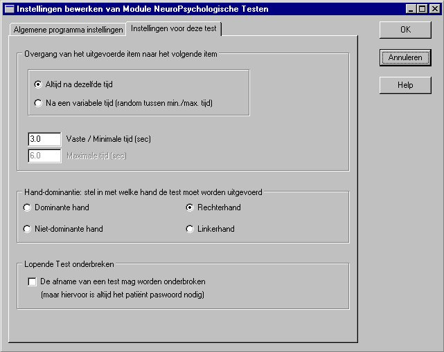
Instelling
Overgang van het uitgevoerde item naar het volgende item
Tijdens de afname van een test wordt
na afloop van de uitvoer van een item even gepauzeerd voordat het volgende
item start. De tijd kan hier ingesteld worden. Er kan gekozen worden voor:
- Altijd na dezelfde tijd. Die tijd
kan in het vak Vaste / Minimale tijd (sec) ingevoerd worden.
- Na een variabele tijd. Er is dan
sprake van een willekeurige tijd (maar wel altijd tussen de ingestelde
minimum tijd en de ingestelde maximum tijd). De minimum en maximum tijd
kunnen ingevoerd worden in respectievelijk de vakken Vaste / Minimale
tijd (sec) en Maximale tijd (sec).
Instelling
hand-dominantie
Hier kan worden ingesteld met welke
hand een test moet worden uitgevoerd.
De instelling geldt voor alle items
in een test.
Er kan worden gekozen voor de dominante
hand of de niet-dominante hand. Deze instelling is dus afhankelijk van
de in Testorganizer bij de patiëntgegevens ingestelde handdominantie.
Er kan echter ook worden gekozen
voor de linkerhand of de rechterhand, dus onafhankelijk van de handdominantie
van de patiënt.
Instelling
De afname van een test mag worden onderbroken
Wanneer dit vakje is aangeklikt
dan wordt gedurende de pauzetijd tussen twee opeenvolgende taken tijdens
een test-afname een knop Pauzeren zichtbaar linksboven op het scherm. Wanneer
hierop met de muis wordt geklikt, dan verschijnt een venster met de keuze
Doorgaan / Pauzeren / Negeren. Pas na invoer van het patiënt paswoord
wordt de keuze Pauzeren / Negeren geaccepteerd. Een gepauzeerde test-afname
kan later worden afgemaakt.
Klik op de knop OK (wijzigingen worden
opgeslagen) of Annuleren (de wijzigingen worden na een extra bevestiging
niet opgeslagen) om dit onderdeel af te sluiten.
Wanneer
dit venster op het scherm staat kunnen de andere onderdelen van de Edit-mode
NIET gebruikt worden. |
| Algemene programma instellingen
Opmerking:
de algemene programma-instellingen kunnen ook direct worden bereikt en
bewerkt vanuit de TestOrganizer. Klik hiervoor in TestOrganizer op de knop
Instel en kies tabblad Modulen. Zoek in de tabel naar de regel die begint
met Neuro Psycho en klik met de rechter muistoets in het laatste veld (onder
kopje: Instellingen) op deze regel. Kies voor Edit bestand. De Algemene
programma instellingen kunnen nu worden bewerkt. Overigens is dan alleen
tabblad Algemene programma instellingen zichtbaar (en dus niet tabblad
Instellingen voor deze test).
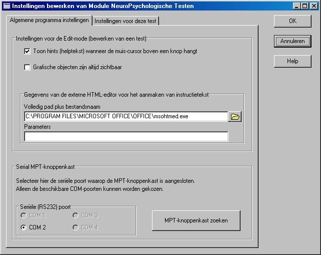
Instellingen voor de Edit-mode
(bewerken van een test)
Instelling
Toon hints (helptekst) wanneer de muis-cursor boven een knop hangt
Wanneer dit vakje is aangevinkt
worden hints (helpteksten) getoond door de muiscursor even te laten
rusten boven een knop in een bedieningspaneel.
Instelling
Grafische zijn objecten altijd zichtbaar
Wanneer dit vakje is aangevinkt
blijven grafische objecten tijdens het stappen door de itemregels zoveel
mogelijk zichtbaar.
Normaal zijn grafische objecten
tijdens het stappen door itemregels alleen zichtbaar wanneer dat bij afspelen
van het item ook het geval zou zijn (dus wanneer de som van de ingestelde
starttijd en de tijdsduur van een grafisch object groter is dan de starttijd
van de geselecteerde itemregel).
Gegevens
van de externe HTML-editor voor het aanmaken van instructietekst
Hier kunnen de gegevens ingevuld
worden van de HTML-editor die wordt gebruikt voor het aanmaken van instructietekst.
Volledig pad plus bestandsnaam:
Plaats in dit vak de naam van het programma inclusief de volledige locatie
op de harde schijf.
Parameters: Vul hier de benodigde
parameters in.
Opmerking 1: wanneer
geen editor is gespecificeerd wordt Windows Kladblok gebruikt als editor.
Een basis-kennis van de HTML-taal is vereist om met Windows Kladblok de
instructietekst te bewerken.
Opmerking 2: wanneer
op een PC internet-ondersteuning alsmede Microsoft Office 2000 op een standaard
wijze zijn geïnstalleerd, dan kunnen de gegevens worden gebruikt zoals
in bovenstaande figuur is aangegeven. De HTML-editor kan in dat geval vooraf
worden worden ingesteld bij de Windows-instellingen via: Start / Instellingen
/ Configuratiescherm / Internet-opties / tabblad Programma's / Internet-programma's
/ HTML-editor.
Opmerking 3: het standaard
programma dat op een PC wordt gebruikt als HTML-editor kan ook als volgt
worden gevonden. Start Windows Verkenner, klik op menu Beeld / Mapopties
/ Bestandstypen en zoek in de lijst naar HTML-document. Selecteer deze
regel. Klik op de knop Bewerken. Selecteer in vak Acties de regel met bewerken
of edit en klik vervolgens op de knop bewerken onder het vak. In vak "Toepassing
die wordt gestart bij de actie" die dan zichtbaar wordt staat dan het volledige
pad plus bestandsnaam van de standaard ingestelde HTML-editor. Deze gegevens
kunnen met kopiëren en plakken worden overgezet naar de instellingen
van module Neuropsychologische Testen.
Voorbeeld: wanneer Netscape als
standaard browser is ingesteld en op een standaard wijze is geïnstalleerd,
dan is dit de volledige programma-aanroep voor editen van een HTML-document:
C:\PROGRA~1\NETSCAPE\COMMUN~1\PROGRAM\NETSCAPE.EXE -edit "%1". Vul in vak
Volledig
pad plus bestandsnaam in: C:\PROGRA~1\NETSCAPE\COMMUN~1\PROGRAM\NETSCAPE.EXE
en in vak Parameters: -edit. "%1" verwijst naar het te bewerken
bestand en wordt door module Neuropsychologische Testen automatisch toegevoegd.
Serial MPT-knoppenkast
Nummer
van de COM-poort
Selecteer het nummer van de seriële
COM-poort van de PC, waarop de MPT-knoppenkast is aangesloten.
Er kan ook automatisch worden gezocht
naar de MPT-knoppenkast.
Ga hiervoor als volgt te werk.
-
Sluit de MPT-knoppenkast middels de
meegeleverde seriële kabel aan op een vrije COM-poort (seriële
RS232-poort) van de PC
-
Sluit de netvoedingsadapter aan op de
MPT-knoppenkast en stop de adaptor in een 230V-contactdoos.
-
Houd de centrale knop (dat is de knop
middenonder op de knoppenkast) ingedrukt.
-
Klik nu met de muis op de knop MPT-knoppenkast
zoeken en vervolgens op de knop Start Zoeken. Alle beschikbare COM-poorten
worden gescand totdat de MPT-knoppenkast wordt gevonden. De resultaten
van de zoekactie worden op het scherm gemeld.
Klik op de knop OK (wijzigingen worden
opgeslagen) of Annuleren (de wijzigingen worden na een extra bevestiging
niet opgeslagen) om dit onderdeel af te sluiten.
Wanneer
dit venster op het scherm staat kunnen de andere onderdelen van de Edit-mode
NIET gebruikt worden. |
Instructietekst
van een test aanmaken/bewerken
Instructietekst staat in een HTML-type
bestand en kan niet worden bewerkt met onderdelen binnen module Neuropsychologische
Testen. Hiervoor moet dus een externe HTML-editor worden gebruikt zoals
Netscape Composer (standaard ingebouwd in Netscape Communicator) of Microsoft
FrontPage. Module Neuropsychologische Testen kan wel een leeg HTML-document
aanmaken en vervolgens de externe HTML-editor starten met dit document.
Hiertoe moeten wel de gegevens van de HTML-editor worden gespecificeerd
bij de Instellingen van module Neuropsychologische Testen (klik
hier voor aanwijzingen).
Na klikken op de knop Instructietekst
bewerken in het Bedieningspaneel verschijnt het venster zoals hieronder
is weergegeven:
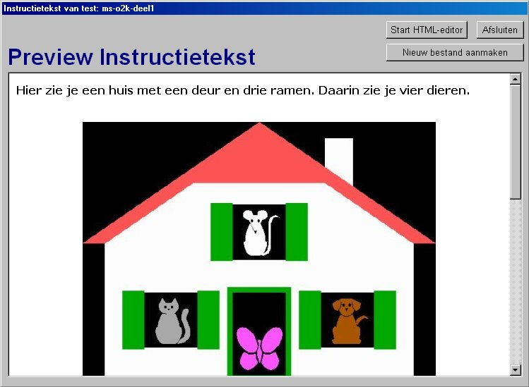
In het vak onder Preview Instructietekst
wordt de inhoud van het bestaande HTML-document getoond en kan volledig
worden bekeken.
Wanneer er nog geen document bestaat,
wordt dat gemeld.
Na klikken op de knop Nieuw bestand
aanmaken, wordt een standaard leeg HTML-document aangemaakt (met de
juiste bestandsnaam op de juiste locatie op de harde schijf).
Na klikken op de knop Start HTML-editor,
wordt de externe HTML-editor gestart en kan de instructietekst worden bewerkt.
Wanneer bij Instellingen van module Neuropsychologische Testen niets is
gespecificeerd, wordt Windows Kladblok gebruikt als HTML-editor.
Na klikken op de knop Afsluiten,
wordt dit onderdeel verlaten.
Opmerking: de inhoud
van het vak onder Preview Instructietekst wordt ververst door op de tekst
Preview
Instructietekst te klikken.
Bedieningspaneel
Kies een ITEM-regel
ITEM-regels bewerken
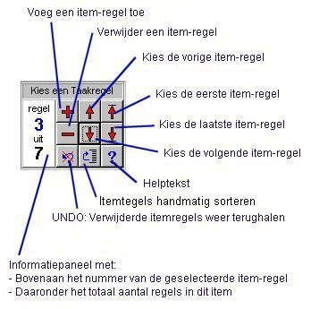
Zie de betekenis van de knoppen hiernaast.
Zodra een andere itemregel wordt
gekozen, worden de instellingen van die regel zichtbaar in het grote itemregel-venster.
Keuze van
ITEM-regels
Dat kan met de knoppen zoals hiernaast
is aangegeven.
Het is echter ook mogelijk om een
itemregel behorend bij een grafisch object, dat op het scherm staat, op
te roepen door op dat object te klikken. Wanneer vervolgens nogmaal op
dat object wordt geklikt, dan kan de positie en grootte van het object
ingesteld worden. Zo kunnen grafische objecten sneller en makkelijker ingesteld
worden.
Undo
Met deze knop kunnen verwijderde
itemregels weer teruggehaald worden. Deze knop is alleen bruikbaar wanneer
er eerder itemregels werden verwijderd. Dat is te zien aan de knop: wanneer
een rood kruis door de pijl zichtbaar is, dan zijn er geen regels verwijderd
en heeft de Undo-knop geen functie (en zal ook geen hint-tekst geven).
Handmatig
sorteren
Itemregels worden altijd automatisch
op starttijd gesorteerd. Wanneer meerdere itemregels met eenzelfde starttijd
worden gebruikt, dan kan het nuttig zijn om de volgorde daarvan handmatig
te wijzigen. Na starten van een invoerobject of een object wachttijd worden
immers de overige itemregels met dezelfde starttijd pas afgehandeld wanneer
het invoerobject of het object wachttijd is afgerond en het kan daarom
nodig zijn om de volgorde van de itemregels met eenzelfde starttijd te
wijzigen.
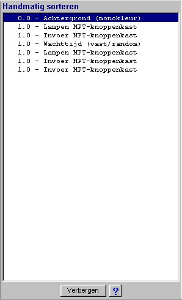
Na indrukken van de knop handmatig
sorteren wordt naast het Edit-paneel een paneel Handmatig sorteren geplaatst.
Hierop staan alle item-regels in de actuele sorteervolgorde. Per item-regel
worden overigens alleen de starttijd en het type object getoond. De op
het Edit-paneel ingestelde item-regel is geselecteerd in het paneel Handmatig
sorteren. Wanneer op het Edit-paneel een andere regel wordt geselecteerd,
dan wordt die regel ook geselecteerd in het paneel Handmatig sorteren.
Wanneer in het paneel Handmatig sorteren een andere regel wordt geselecteerd,
wordt die regel ook ingesteld in het Edit-paneel.
In paneel Handmatig sorteren kan
een regel op de volgende wijze worden verplaatst: selecteer de regel die
verplaatst moet worden en houd de muisknop ingedrukt. Sleep de regel vervolgens
naar de gewenste positie en laat dan de muisknop los.
Het paneel Handmatig sorteren kan
worden verwijderd door indrukken van de knop Verbergen op het paneel of
door opnieuw indrukken van de knop Handmatig sorteren op het Edit-paneel.
Het paneel wordt in een aantal gevallen automatisch verwijderd, onder andere
tijdens een Test-uitvoer van het item of bij het afsluiten van de Edit-sessie.
|
Instellingen
van een geselecteerde ITEM-regel
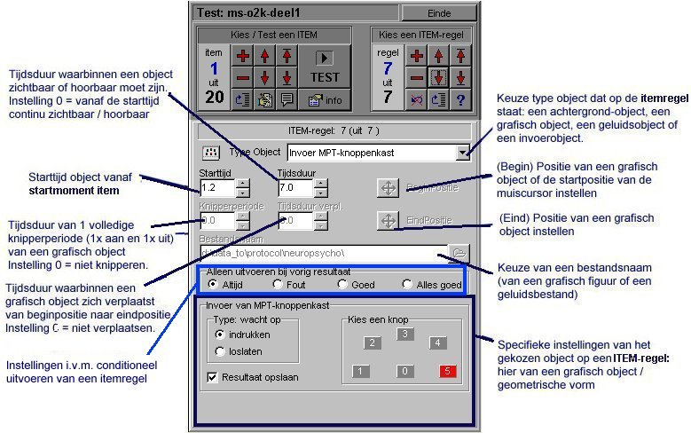
Type object
In feite het soort actie dat uitgevoerd
moet worden.
Er kan gekozen worden uit de volgende
mogelijkheden.
Achtergrond
(bestand)
Achtergrond
(monokleur)
Grafisch
object (bestand)
Grafisch
object (geometrische vorm)
Invoer
(toetsenbord)
Invoer
(muis)
Invoer
(MPT-knoppenkast)
Geluid
(bestand)
Lampen
MPT-knoppenkast
Invoer
(MPT-fingertapping)
ResultaatMemo:
Tonen (1e keer)
ResultaatMemo:
Tonen (opnieuw)
ResultaatMemo:
Verbergen
Wachttijd
vast/random
Instelling
Early Responstijd
Achtergrond
(bestand)
Keuze achtergrondplaat
uit bestand.
Bestandsnaam:
Keuze van het bestand met de achtergrondplaat.
Mogelijke
bestandtypen: BMP, WMF en EMF.
De afmeting van een achtergrondplaat
bedraagt 800 x 600 pixels.
(Wanneer het bestand andere afmetingen
heeft, dan wordt het plaatje geschaald naar 800 x 600 pixels).
Starttijd:
tijdstip
waarop deze ITEM-regel uitgevoerd moet worden. Aantal seconden vanaf het
ITEM-start, met 1 decimaal op te geven.
Opmerking:
bij elke wijziging van de starttijd worden de ITEM-regels opnieuw gesorteerd
op oplopende starttijd. ITEM-regels met eenzelfde starttijd moeten altijd
handmatig worden gesorteerd !
Alleen uitvoeren
bij vorig resultaat: hier kan worden ingesteld of deze itemregel altijd
moet worden uitgevoerd of afhankelijk van het resultaat van de vorige invoer.
Altijd:
deze itemregel wordt altijd uitgevoerd; Fout: deze itemregel wordt
alleen uitgevoerd wanneer het resultaat van het vorige invoerobject Fout
was; Goed: deze itemregel wordt alleen uitgevoerd wanneer het resultaat
van het vorige invoerobject Goed was; Alles goed: deze regel wordt
alleen uitgevoerd wanneer het resultaat van alle vorige invoerobjecten
in dit item Goed was.
OPMERKING:
Wanneer bij uitvoer van een item een andere achtergrondplaat wordt gewenst,
moet die opnieuw worden ingevoerd als object.
Achtergrond
(monokleur)
Keuze achtergrondplaat
met 1 kleur.
Starttijd:
Tijdstip
waarop deze ITEM-regel uitgevoerd moet worden. Aantal seconden vanaf ITEM-start,
met 1 decimaal op te geven.
Opmerking:
bij elke wijziging van de starttijd worden de ITEM-regels opnieuw gesorteerd
op oplopende starttijd. ITEM-regels met eenzelfde starttijd moeten altijd
handmatig worden gesorteerd !
OPMERKING:
Wanneer bij uitvoer van een item een andere achtergrondplaat wordt gewenst,
moet die opnieuw worden ingevoerd als object.
SPECIFIEKE
INSTELLINGEN
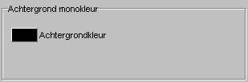
Achtergrondkleur:
Keuze
van de kleur van de achtergrondplaat. De ingestelde kleur is zichtbaar
op de druktoets. Na indrukken van de toets kan een andere kleur worden
gekozen.
Alleen uitvoeren
bij vorig resultaat: hier kan worden ingesteld of deze itemregel altijd
moet worden uitgevoerd of afhankelijk van het resultaat van de vorige invoer.
Altijd:
deze itemregel wordt altijd uitgevoerd; Fout: deze itemregel wordt
alleen uitgevoerd wanneer het resultaat van het vorige invoerobject Fout
was; Goed: deze itemregel wordt alleen uitgevoerd wanneer het resultaat
van het vorige invoerobject Goed was; Alles goed: deze regel wordt
alleen uitgevoerd wanneer het resultaat van alle vorige invoerobjecten
in dit item Goed was.
Grafisch
object (bestand)
Keuze grafisch
object (voorgrondplaatje) uit een grafisch bestand.
Er kunnen
maximaal 10 objecten (met elk een afbeelding uit een grafisch bestand)
van dit type in één item worden gebruikt.
Wanneer de geselecteerde ITEM-regel
een dergelijk object type bevat, dan is in de rechter onderhoek van het
plaatje een 'hot spot' zichtbaar, om het plaatje te onderscheiden van andere
zichtbare plaatjes.
Bestandsnaam:
Keuze van het bestand met het voorgrondplaatje.
Mogelijke
bestandtypen: BMP, WMF en EMF.
Na keuze worden de afmetingen aangepast
aan het raster (vast ingesteld op 10 x 10 pixels). De breedte en hoogte
van het plaatje kunnen daardoor iets kleiner worden.
Wanneer de plaatjes nog moeten worden
aangemaakt, dan is het handig om hiermee rekening te houden. De afmetingen
zijn minimaal 10 x 10 pixels en voor grotere plaatjes geldt dat zowel de
breedte als de hoogte een veelvoud moeten bedragen van 10 pixels. De breedte
van een plaatje mag nooit groter zijn dan de 800 pixels, de hoogte nooit
groter dan 600 pixels.
Starttijd:
Tijdstip
waarop deze ITEM-regel uitgevoerd moet worden. De starttijd wordt opgegeven
in seconden vanaf ITEM-start (met 1 decimaal).
Opmerking:
bij elke wijziging van de starttijd worden de ITEM-regels opnieuw gesorteerd
op oplopende starttijd. ITEM-regels met eenzelfde starttijd moeten altijd
handmatig worden gesorteerd !
Tijdsduur:
Tijdsduur waarbinnen het plaatje zichtbaar is. Tijdsduur wordt opgegeven
in seconden (met 1 decimaal).
Opmerking:
wanneer 0 wordt gespecificeerd blijft het plaatje zichtbaar tot het einde
van het item.
Knipperperiode:
Tijdsduur
van 1 volledige knipperperiode (dus 1x aan-tijd plus 1x uit-tijd) . De
knipperperiode wordt opgegeven in seconden (met 1 decimaal).
Opmerking:
wanneer 0 wordt gespecificeerd knippert het plaatje niet.
Tijdsduur
verpl.: Tijdsduur waarbinnen het plaatje zich verplaatst van de beginpositie
naar de eindpositie. De tijdsduur van de verplaatsing wordt opgegeven in
seconden (met 1 decimaal).
Opmerking:
wanneer 0 wordt gespecificeerd blijft het plaatje op de beginpositie staan.
Beginpositie:
Na
indrukken van deze knop kunnen de beginpositie (linker bovenhoek) en de
afmetingen van het plaatje ingesteld worden.
Het instelpaneel
verdwijnt tijdelijk, zodat het gehele venster zichtbaar wordt.
Instellen
beginpositie (linker bovenhoek): klik met de linker muismuis op het
plaatje (op een andere plek dan de hot spot in de rechter onderhoek) en
houdt de muistoets ingedrukt. Het plaatje kan nu naar de gewenste positie
verplaatst worden, maar blijft altijd binnen de kaders van het venster
en altijd op raster-coördinaten.
Instellen
afmetingen: klik met de linker muismuis op de hot spot in de rechter
onderhoek op het plaatje en houdt de muistoets ingedrukt. Het breedte en
hoogte van het plaatje kunnen nu naar rechts en naar beneden t.o.v. de
linker bovenhoek ingesteld worden. Het plaatje blijft altijd binnen de
kaders van het venster en op raster-coördinaten
Stoppen met
instellen van de beginpositie: Klik met de muis op de achtergrond buiten
het gebied van het grafisch object. Het instelpaneel verschijnt dan weer.
Eindpositie:
Na
indrukken van deze knop kan de eindpositie (linker bovenhoek) van het plaatje
ingesteld worden. Dit is alleen zinvol wanneer het plaatje zich moet verplaatsen
van begin- naar eindpositie (dus bij Tijdsduur verpl. mag niet 0 staan).
Het instelpaneel
verdwijnt tijdelijk, zodat het gehele venster zichtbaar wordt.
(De hotspot
staat mogelijk nog op de locatie van de beginpositie maar verschijnt in
het grafisch object zodra de muis boven het grafisch object wordt bewogen).
Instellen
eindpositie (linker bovenhoek): klik met de linker muismuis op het
plaatje (op een andere plek dan de hot spot in de rechter onderhoek) en
houdt de muistoets ingedrukt. Het plaatje kan nu naar de gewenste positie
verplaatst worden, maar blijft altijd binnen de kaders van het venster
en altijd op raster-coördinaten.
Stoppen met
instellen van de eindpositie: Klik met de muis op de achtergrond buiten
het gebied van het grafisch object. Het instelpaneel verschijnt dan weer.
Opmerking:
de afmetingen van het plaatje kunnen ook bij eindpositie ingesteld worden,
maar dit is niet zinvol. Tijdens de verplaatsing behoudt het plaatje namelijk
de afmetingen zoals ingesteld bij Beginpositie.
Alleen uitvoeren
bij vorig resultaat: hier kan worden ingesteld of deze itemregel altijd
moet worden uitgevoerd of afhankelijk van het resultaat van de vorige invoer.
Altijd:
deze itemregel wordt altijd uitgevoerd; Fout: deze itemregel wordt
alleen uitgevoerd wanneer het resultaat van het vorige invoerobject Fout
was;
Goed: deze itemregel wordt alleen uitgevoerd wanneer het resultaat
van het vorige invoerobject Goed was; Alles goed: deze regel wordt
alleen uitgevoerd wanneer het resultaat van alle vorige invoerobjecten
in dit item Goed was.
SPECIFIEKE
INSTELLINGEN
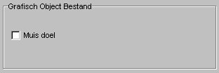
Muisdoel:
Wanneer
het instelvakje is aangeklikt dan wordt dit plaatje gebruikt als muisdoel,
dus bij een reactietijdmeting waarbij met de muis op een bepaald plaatje
geklikt moet worden. Slechts 1 voorgrondplaatje kan muisdoel zijn.
Opmerking:
wanneer bij meerdere voorgrondplaatjes (object types grafisch object
bestand of grafisch object geometrische vorm) muisdoel is aangezet,
dan zal alleen het plaatje met de hoogste starttijd muisdoel zijn.
Grafisch
object (geometrische vorm)
Keuze grafisch
object (voorgrondplaatje) met een bepaalde vorm en kleur.
Wanneer de geselecteerde ITEM-regel
een dergelijk object type bevat, dan is in de rechter onderhoek van het
plaatje een 'hot spot' zichtbaar, om het plaatje te onderscheiden van andere
zichtbare plaatjes.
Knipperperiode:
Tijdsduur
van 1 volledige knipperperiode (dus 1x aan-tijd plus 1x uit-tijd) . De
knipperperiode wordt opgegeven in seconden (met 1 decimaal).
Opmerking:
wanneer 0 wordt gespecificeerd knippert het plaatje niet.
Starttijd:
Tijdstip
waarop deze ITEM-regel uitgevoerd moet worden. De starttijd wordt opgegeven
in seconden vanaf ITEM-start (met 1 decimaal).
Opmerking:
bij elke wijziging van de starttijd worden de ITEM-regels opnieuw gesorteerd
op oplopende starttijd. ITEM-regels met eenzelfde starttijd moeten altijd
handmatig worden gesorteerd !
Tijdsduur:
Tijdsduur waarbinnen het plaatje zichtbaar is. Tijdsduur wordt opgegeven
in seconden (met 1 decimaal).
Opmerking:
wanneer 0 wordt gespecificeerd blijft het plaatje zichtbaar tot het einde
van het item.
Knipperperiode:
Tijdsduur
van 1 volledige knipperperiode (dus 1x aan-tijd plus 1x uit-tijd) . De
knipperperiode wordt opgegeven in seconden (met 1 decimaal).
Opmerking:
wanneer 0 wordt gespecificeerd knippert het plaatje niet.
Tijdsduur
verpl.: Tijdsduur waarbinnen het plaatje zich verplaatst van de beginpositie
naar de eindpositie. De tijdsduur van de verplaatsing wordt opgegeven in
seconden (met 1 decimaal).
Opmerking:
wanneer 0 wordt gespecificeerd blijft het plaatje op de beginpositie staan.
Beginpositie:
Na
indrukken van deze knop kunnen de beginpositie (linker bovenhoek) en de
afmetingen van het plaatje ingesteld worden.
Het instelpaneel
verdwijnt tijdelijk, zodat het gehele venster zichtbaar wordt.
Instellen
beginpositie (linker bovenhoek): klik met de linker muismuis op het
plaatje (op een andere plek dan de hot spot in de rechter onderhoek) en
houdt de muistoets ingedrukt. Het plaatje kan nu naar de gewenste positie
verplaatst worden, maar blijft altijd binnen de kaders van het venster
en altijd op raster-coördinaten.
Instellen
afmetingen: klik met de linker muismuis op de hot spot in de rechter
onderhoek op het plaatje en houdt de muistoets ingedrukt. Het breedte en
hoogte van het plaatje kunnen nu naar rechts en naar beneden t.o.v. de
linker bovenhoek ingesteld worden. Het plaatje blijft altijd binnen de
kaders van het venster en op raster-coördinaten
Stoppen met
instellen van de beginpositie: Klik met de muis op de achtergrond buiten
het gebied van het grafisch object. Het instelpaneel verschijnt dan weer.
Eindpositie:
Na
indrukken van deze knop kan de eindpositie (linker bovenhoek) van het plaatje
ingesteld worden. Dit is alleen zinvol wanneer het plaatje zich moet verplaatsen
van begin- naar eindpositie (dus bij Tijdsduur verpl. mag niet 0 staan).
Het instelpaneel
verdwijnt tijdelijk, zodat het gehele venster zichtbaar wordt.
(De hotspot
staat mogelijk nog op de locatie van de beginpositie maar verschijnt in
het grafisch object zodra de muis boven het grafisch object wordt bewogen).
Instellen
eindpositie (linker bovenhoek): klik met de linker muismuis op het
plaatje (op een andere plek dan de hot spot in de rechter onderhoek) en
houdt de muistoets ingedrukt. Het plaatje kan nu naar de gewenste positie
verplaatst worden, maar blijft altijd binnen de kaders van het venster
en altijd op raster-coördinaten.
Stoppen met
instellen van de eindpositie: Klik met de muis op de achtergrond buiten
het gebied van het grafisch object. Het instelpaneel verschijnt dan weer.
Opmerking:
de afmetingen van het plaatje kunnen ook bij eindpositie ingesteld worden,
maar dit is niet zinvol. Tijdens de verplaatsing behoudt het plaatje namelijk
de afmetingen zoals ingesteld bij Beginpositie.
Alleen uitvoeren
bij vorig resultaat: hier kan worden ingesteld of deze itemregel altijd
moet worden uitgevoerd of afhankelijk van het resultaat van de vorige invoer.
Altijd:
deze itemregel wordt altijd uitgevoerd; Fout: deze itemregel wordt
alleen uitgevoerd wanneer het resultaat van het vorige invoerobject Fout
was; Goed: deze itemregel wordt alleen uitgevoerd wanneer het resultaat
van het vorige invoerobject Goed was; Alles goed: deze regel wordt
alleen uitgevoerd wanneer het resultaat van alle vorige invoerobjecten
in dit item Goed was.
SPECIFIEKE
INSTELLINGEN
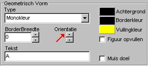
Geometrische
vorm type: Hier kan de gewenste geometrische vorm geselecteerd worden.
Afhankelijk
van het type kunnen één of meer instellingen uitgevoerd worden.
Er kan gekozen
worden uit de volgende mogelijkheden:
(1) Monokleur
Een instelbare
rechthoek met 1 kleur (zonder border).
Hierbij naar
keuze instellen: Vullingkleur (is kleur van de rechthoek).
(2) Lijn
Een lijn binnen
het vlak van een instelbare rechthoek.
Hierbij naar
keuze instellen: Vullingkleur (is kleur van de lijn), Borderbreedte
(is breedte van de lijn),
Achtergrondkleur (is kleur van de
achtergrond van de rechthoek achter de lijn), Orientatie (is oriëntatie
van de lijn: horizontaal, vertikaal of diagonaal).
(3) Rechthoek
Een instelbare
rechthoek met border rondom de rechthoek.
Hierbij naar
keuze instellen: Vullingkleur (is de vulkleur van de rechthoek,
maar alleen zichtbaar wanneer het vakje Figuur opvullen is aangeklikt),
Borderkleur
(is de kleur van de border),
Borderbreedte (is de breedte van de
border rondom de rechthoek),
Achtergrondkleur (is kleur van de achtergrond,
maar alleen zichtbaar wanneer het vakje Figur opvullen niet is aangeklikt),
Figuur
opvullen (aangeklikt: dan wordt de vulkleur gebruikt als vulling voor
de rechthoek en anders de achtergrondkleur).
(4) Ellips
(en cirkel)
Een instelbare
ellips met border rondom de ellips (binnen het vlak van een instelbare
rechthoek).
Hierbij naar
keuze instellen: Vullingkleur (is de vulkleur van de ellips, maar
alleen zichtbaar wanneer het vakje Figuur opvullen is aangeklikt), Borderkleur
(is de kleur van de border),
Borderbreedte (is de breedte van de
border rondom de ellips),
Achtergrondkleur (is kleur van de achtergrond
buiten de ellips en binnen de ellips, maar dit laatste alleen wanneer het
vakje Figuur opvullen niet is aangeklikt),
Figuur opvullen (aangeklikt:
dan wordt de vulkleur gebruikt als vulling voor de rechthoek en anders
de achtergrondkleur).
(5) Ster
Een instelbare
stervom (8-hoek) met border rondom de ster (binnen het vlak van een instelbare
rechthoek). De vorm kan met orientatie ingesteld worden.
Hierbij naar
keuze instellen: Vullingkleur (is de vulkleur van de ster, maar
alleen zichtbaar wanneer het vakje Figuur opvullen is aangeklikt), Borderkleur
(is de kleur van de border),
Borderbreedte (is de breedte van de
border rondom de ster), Achtergrondkleur (is kleur van de achtergrond
buiten de stervorm en binnen de stervorm, maar dit laatste alleen wanneer
het vakje Figuur opvullen niet is aangeklikt),
Figuur opvullen (aangeklikt:
dan wordt de vulkleur gebruikt als vulling voor de stervorm en anders de
achtergrondkleur) en Orientatie (is de soort stervorm met 8 variaties).
(6) Pijl
Een instelbare
pijlvorm met border rondom de pijl (binnen het vlak van een instelbare
rechthoek).
Hierbij naar
keuze instellen: Vullingkleur (is de vulkleur van de pijl, maar
alleen zichtbaar wanneer het vakje Figuur opvullen is aangeklikt), Borderkleur
(is de kleur van de border),
Borderbreedte (is de breedte van de
border rondom de pijlvorm),
Achtergrondkleur (is kleur van de achtergrond
buiten de pijl en binnen de pijl, maar dit laatste alleen wanneer het vakje
Figur opvullen niet is aangeklikt), Figuur opvullen (aangeklikt:
dan wordt de vulkleur gebruikt als vulling voor de pijl en anders de achtergrondkleur)
en Orientatie (is oriëntatie van de pijl: alle richtingen horizontaal,
vertikaal of diagonaal).
(7) Letter
Één
of meerdere lettertekens binnen het vlak van een instelbare rechthoek.
Hierbij naar
keuze instellen: Vullingkleur(is de kleur van de lettertekens),
Borderkleur
(is de kleur van de border rondom de rechthoek),
Borderbreedte (is
de breedte van de border rondom de rechthoek),
Achtergrondkleur
(is kleur van de achtergrond van de rechthoek), Orientatie (is de
grootte van de lettertekens; met de stand '1 uur' wordt de kleinste letter
ingesteld en de grootte van de lettertekens neemt toe door draaiing van
orientatie met de wijzers van de klok mee), Tekst (is de letter
of lettertekens).
(8) Dobbelsteen
Een dobbelsteen
binnen het vlak van een instelbare rechthoek.
Hierbij naar
keuze instellen: Vullingkleur (is de kleur van de stippen van de
dobbelsteen), Borderkleur (is de kleur van de border rondom de rechthoek),
Borderbreedte
(is de breedte van de border rondom de rechthoek),
Achtergrondkleur
(is de kleur van de achtergrond van de rechthoek), Orientatie (is
de stand van de dobbelsteen, dus het aantal stippen; met de stand '1 uur'
wordt de kleinste stand (1 stip) ingesteld en de stand neemt toe door draaiing
van orientatie met de wijzers van de klok mee; ook de normaal niet voorkomende
standen met 7 of 8 stippen kan worden ingesteld).
Muisdoel:
Wanneer
het instelvakje is aangeklikt dan wordt dit plaatje gebruikt als muisdoel,
dus bij een reactietijdmeting waarbij met de muis op een bepaald plaatje
geklikt moet worden. Slechts 1 voorgrondplaatje kan muisdoel zijn.
Opmerking:
wanneer bij meerdere voorgrondplaatjes (object types grafisch object
bestand of grafisch object geometrische vorm) muisdoel is aangezet,
dan zal alleen het plaatje met de hoogste starttijd muisdoel zijn.
Invoer
(toetsenbord)
Keuze wacht op invoer van toetsenbord.
Dit is altijd de laatste regel van een item, want uitvoer van een item
stopt na invoer.
Starttijd:
Tijdstip
waarop deze ITEM-regel uitgevoerd moet worden. De starttijd wordt opgegeven
in seconden vanaf ITEM-start (met 1 decimaal).
Opmerking:
bij elke wijziging van de starttijd worden de ITEM-regels opnieuw gesorteerd
op oplopende starttijd. ITEM-regels met eenzelfde starttijd moeten altijd
handmatig worden gesorteerd !
Tijdsduur:
Maximaal toegestane tijdsduur waarbinnen invoer afgehandeld moet zijn.
Tijdsduur wordt opgegeven in seconden (met 1 decimaal).
Opmerking:
wanneer 0 wordt gespecificeerd wordt gewacht op invoer.
Alleen uitvoeren
bij vorig resultaat: hier kan worden ingesteld of deze itemregel altijd
moet worden uitgevoerd of afhankelijk van het resultaat van de vorige invoer.
Altijd:
deze itemregel wordt altijd uitgevoerd; Fout: deze itemregel wordt
alleen uitgevoerd wanneer het resultaat van het vorige invoerobject Fout
was; Goed: deze itemregel wordt alleen uitgevoerd wanneer het resultaat
van het vorige invoerobject Goed was; Alles goed: deze regel wordt
alleen uitgevoerd wanneer het resultaat van alle vorige invoerobjecten
in dit item Goed was.
SPECIFIEKE
INSTELLINGEN
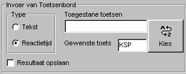
Invoer van
toetsenbord, type: keuze van het type toetsenbordinvoer. Keuze uit
tekst (er moet een tekst ingetoetst worden, afgesloten door indrukken van
de Enter-toets) of reactietijd (er moet één toets ingedrukt
worden, uit een reeks van toegestane toetsen).
Resultaat
opslaan: keuze of het resultaat van de invoer moet worden bewaard.
Wanneer dit vakje wordt aangevinkt is het resultaat beschikbaar in het
rapport en het Resultaatmemo.
Tekst:
de tekst die ingetoetst moet worden (zonder de afsluitende Enter-toets).
Deze keuze is alleen zichtbaar wanneer als type toetsenbordinvoer is gekozen
voor tekst. De tekst mag bestaan uit letters en/of cijfers.
Toegestane
toetsen / Gewenste toets: de gewenste toets en de toegestane toetsen.
Deze keuze is alleen zichtbaar wanneer als type toetsenbordinvoer is gekozen
voor reactietijd. De toetsen kunnen niet in de vakken ingevoerd worden,
selectie geschiedt door klikken op de drukknop "Kies".
Dan verschijnt
het volgende venster waarop een toetsenbord is afgebeeld met alle bruikbare
toetsen.
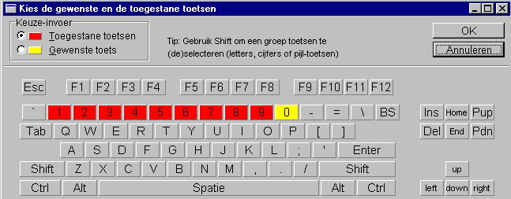
Wanneer
dit venster op het scherm staat kunnen de andere onderdelen van de Edit-mode
NIET gebruikt worden.
Selectie van een toets door muisklik
op een toets, de-selectie door nogmaals een muisklik op dezelfde toets.
Er kunnen meerdere toegestane toetsen
ingesteld worden (minimaal 0 en maximaal 31, worden in rood weergegeven)
en één gewenste toets (wordt in geel weergegeven).
Met de instelling Keuze-invoer linksboven
kan ingesteld worden of de toegestane toetsen of de gewenste toets ingesteld
worden.
Wanneer de Shift-toets ingedrukt
gehouden wordt, dan kan door muisklik op een toets een groep toegestane
toetsen geselecteerd of gedeselecteerd worden (bijvoorbeeld alle letters
of alle cijfers).
Belangrijk: Bij selectie
van de linker of rechter Shift-toets moet bedacht worden dat tijdens test-afname
niet onderscheiden kan worden of de linker Shift-toets of de rechter Shift-toets
wordt ingedrukt. Datzelfde geldt voor de linker en rechter Alt-toets en
de linker en rechter Control-toets.
Na selectie van de toetsen kan dit
onderdeel worden verlaten door indrukken van de toets OK (de wijzigingen
worden bewaard) of Annuleren (de wijzigingen worden NIET bewaard). Wanneer
geen gewenste toets is opgegeven, dan wordt aangenomen dat de Spatiebalk
gebruikt moet worden.
De geselecteerde toegestane toetsen
en de geselecteerde gewenste toets zijn nu gecodeerd ingevuld in de vakken
Toegestane
toetsen / Gewenste toets.
Deze codes worden ook gebruikt in
het protocolbestand en het resultaatbestand.
Klik
op deze regel voor een overzicht van de gecodeerde toetsen.
Opmerking: de toets Esc (Escape)
kan niet worden geselecteerd (want deze toets kan tijdens test-afname worden
gebruikt om de test af te breken).
Invoer
(muis)
Keuze wacht op invoer van indrukken
van een muisknop. Dit is altijd de laatste regel van een item, want uitvoer
van een item stopt na invoer.
Starttijd:
Tijdstip
waarop deze ITEM-regel uitgevoerd moet worden. De starttijd wordt opgegeven
in seconden vanaf ITEM-start (met 1 decimaal).
Opmerking:
bij elke wijziging van de starttijd worden de ITEM-regels opnieuw gesorteerd
op oplopende starttijd. ITEM-regels met eenzelfde starttijd moeten altijd
handmatig worden gesorteerd !
Tijdsduur:
Maximaal toegestane tijdsduur waarbinnen invoer afgehandeld moet zijn.
Tijdsduur wordt opgegeven in seconden (met 1 decimaal).
Opmerking:
wanneer 0 wordt gespecificeerd wordt gewacht op invoer.
Beginpositie:
Na
indrukken van deze knop kan de gewenste startpositie van de muis ingesteld
worden door met de muis te klikken op de gewenste positie. De ingestelde
muispositie is zichtbaar als een wit kruis op een blauw vierkantje. Deze
instelling is overigens alleen van toepassing bij keuze van Grafisch
object is doel bijInvoer van muis / Type Reactietijdsmeting.
Alleen uitvoeren
bij vorig resultaat: hier kan worden ingesteld of deze itemregel altijd
moet worden uitgevoerd of afhankelijk van het resultaat van de vorige invoer.
Altijd:
deze itemregel wordt altijd uitgevoerd; Fout: deze itemregel wordt
alleen uitgevoerd wanneer het resultaat van het vorige invoerobject Fout
was; Goed: deze itemregel wordt alleen uitgevoerd wanneer het resultaat
van het vorige invoerobject Goed was; Alles goed: deze regel wordt
alleen uitgevoerd wanneer het resultaat van alle vorige invoerobjecten
in dit item Goed was.
SPECIFIEKE
INSTELLINGEN
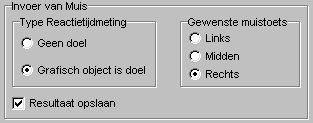
Invoer van
muis, type Reactietijdsmeting: Keuze van het type muisinvoer. Keuze
uit geen doel (er moet alleen op de gewenste muisknop gedrukt worden) of
grafisch object is doel (er moet met de voorgeschreven muistoets geklikt
worden op een grafisch object, dus een voorgrondplaatje). Alleen in het
laatste geval wordt de muispositie altijd op de te specificeren beginpositie
ingesteld.
Resultaat
opslaan: keuze of het resultaat van de invoer moet worden bewaard.
Wanneer dit vakje wordt aangevinkt is het resultaat beschikbaar in het
rapport en het Resultaatmemo.
Gewenste
muistoets: De gewenste muistoets. Keuze uit linkse, middelste (indien
aanwezig) of rechtse muisknop.
Let op ! De
muis moet binnen de Windows-omgeving (Instellingen / Configuratiescherm)
als een rechtshandige muis ingesteld staan.
Wanneer bij
de patiëntgegevens linkshandigheid is ingesteld, dan worden bij testafname
de muisknoppen links/rechts automatisch omgedraaid.
Invoer
(MPT-knoppenkast)
Keuze wacht op indrukken of loslaten
van één of meerdere knoppen op de MPT-knoppenkast.
Starttijd:
Tijdstip
waarop deze ITEM-regel uitgevoerd moet worden. De starttijd wordt opgegeven
in seconden vanaf ITEM-start (met 1 decimaal).
Opmerking:
bij elke wijziging van de starttijd worden de ITEM-regels opnieuw gesorteerd
op oplopende starttijd. ITEM-regels met eenzelfde starttijd moeten altijd
handmatig worden gesorteerd !
Tijdsduur:
Maximaal toegestane tijdsduur waarbinnen invoer afgehandeld moet zijn.
Tijdsduur wordt opgegeven in seconden (met 1 decimaal).
Opmerking:
wanneer 0 wordt gespecificeerd wordt gewacht op invoer.
Alleen uitvoeren
bij vorig resultaat: hier kan worden ingesteld of deze itemregel altijd
moet worden uitgevoerd of afhankelijk van het resultaat van de vorige invoer.
Altijd:
deze itemregel wordt altijd uitgevoerd; Fout: deze itemregel wordt
alleen uitgevoerd wanneer het resultaat van het vorige invoerobject Fout
was; Goed: deze itemregel wordt alleen uitgevoerd wanneer het resultaat
van het vorige invoerobject Goed was; Alles goed: deze regel wordt
alleen uitgevoerd wanneer het resultaat van alle vorige invoerobjecten
in dit item Goed was.
SPECIFIEKE
INSTELLINGEN
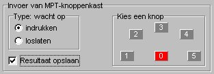
Type: wacht
op: keuze of gewacht moet worden op indrukken of loslaten van een knop.
Kies een
knop: keuze van de knop of knoppen die moet worden ingedrukt of losgelaten.
Klik met de muis op de gewenste knop. Er moet altijd minstens één
knop worden ingesteld.
Resultaat
opslaan: keuze of het resultaat van de invoer moet worden bewaard.
Wanneer dit vakje wordt aangevinkt is het resultaat beschikbaar in het
rapport en het Resultaatmemo.
Invoer
MPT-fingertapping
MPT-fingertapping uitvoeren.
Gedurende de ingestelde tijdsduur
moet continu en zo snel mogelijk een opgegeven knop op de MPT-knoppenkast
worden gedrukt. De tijd tussen 2 opeenvolgende knop-aanslagen (indrukken)
wordt continu geregistreerd.
Tussenresultaten (gemiddelde tussen-toetstijd
en standaard deviatie) worden op het ResultaatMemo gemeld, de intervaltijd
waarover tussenresultaten worden bepaald is instelbaar.
OPMERKING:
Bij MPT-fingertapping worden de meetresultaten altijd opgeslagen.
Starttijd:
Tijdstip
waarop deze ITEM-regel uitgevoerd moet worden. De starttijd wordt opgegeven
in seconden vanaf ITEM-start (met 1 decimaal).
Opmerking:
bij elke wijziging van de starttijd worden de ITEM-regels opnieuw gesorteerd
op oplopende starttijd. ITEM-regels met eenzelfde starttijd moeten altijd
handmatig worden gesorteerd !
Tijdsduur:
De tijdsduur van de fingertapping-meting. Tijdsduur wordt opgegeven in
seconden (met 1 decimaal).
Opmerking:
Tijdsduur heeft hier dus een andere functie dan bij andere invoerobjecten
! Tijdsduur moet minimaal op 1 worden ingesteld (en mag nooit 0 zijn).
Alleen uitvoeren
bij vorig resultaat: hier kan worden ingesteld of deze itemregel altijd
moet worden uitgevoerd of afhankelijk van het resultaat van de vorige invoer.
Altijd:
deze itemregel wordt altijd uitgevoerd; Fout: deze itemregel wordt
alleen uitgevoerd wanneer het resultaat van het vorige invoerobject Fout
was; Goed: deze itemregel wordt alleen uitgevoerd wanneer het resultaat
van het vorige invoerobject Goed was; Alles goed: deze regel wordt
alleen uitgevoerd wanneer het resultaat van alle vorige invoerobjecten
in dit item Goed was.
SPECIFIEKE
INSTELLINGEN
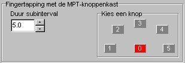
Duur subinterval:
keuze van de intervaltijd waarover tussenresultaten moeten worden bepaald
en getoond. Subinterval wordt opgegeven in seconden (met 1 decimaal). De
tussenresulaten worden tijdens de meting alleen op het ResultaatMemo getoond,
wanneer dat tevoren is geactiveerd. De tussenresultaten (de gemiddelde
tussen-toetstijd en standaarddeviatie over elk subinterval) en het eindresultaat
(de gemiddelde tussen-toetstijd en standaarddeviatie over de gehele meting)
wordt opgeslagen in het resultaatbestand.
Kies een
knop: keuze van de knop (mag slechts 1 knop zijn) die moet worden ingedrukt.
Klik met de muis op de gewenste knop.
Lampen
MPT-knoppenkast
De lampen op de MPT-knoppenkast
aan- of uitzetten.
Starttijd:
Tijdstip
waarop deze ITEM-regel uitgevoerd moet worden. De starttijd wordt opgegeven
in seconden vanaf ITEM-start (met 1 decimaal).
Opmerking:
bij elke wijziging van de starttijd worden de ITEM-regels opnieuw gesorteerd
op oplopende starttijd. ITEM-regels met eenzelfde starttijd moeten altijd
handmatig worden gesorteerd !
Alleen uitvoeren
bij vorig resultaat: hier kan worden ingesteld of deze itemregel altijd
moet worden uitgevoerd of afhankelijk van het resultaat van de vorige invoer.
Altijd:
deze itemregel wordt altijd uitgevoerd; Fout: deze itemregel wordt
alleen uitgevoerd wanneer het resultaat van het vorige invoerobject Fout
was; Goed: deze itemregel wordt alleen uitgevoerd wanneer het resultaat
van het vorige invoerobject Goed was; Alles goed: deze regel wordt
alleen uitgevoerd wanneer het resultaat van alle vorige invoerobjecten
in dit item Goed was.
SPECIFIEKE
INSTELLINGEN
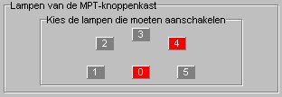
Kies de
lampen die moeten aanschakelen: Klik met de muis op een knop om de
corresponderende lamp aan te zetten (de knop is dan rood) of uit te zetten.
Geluid
(bestand)
Keuze afspelen van een geluidsfragment.
Er kunnen
maximaal 10 objecten (met elk een ander geluid uit een geluidsbestand)
van dit type in één item worden gebruikt.
Bestandsnaam:
Keuze van het bestand met het geluidsfragment.
Mogelijke
bestandtypen: WAV.
Starttijd:
Tijdstip
waarop deze ITEM-regel uitgevoerd moet worden. De starttijd wordt opgegeven
in seconden vanaf ITEM-start (met 1 decimaal).
Opmerking:
bij elke wijziging van de starttijd worden de ITEM-regels opnieuw gesorteerd
op oplopende starttijd. ITEM-regels met eenzelfde starttijd moeten altijd
handmatig worden gesorteerd !
Tijdsduur:
Tijdsduur waarbinnen het geluisfragment hoorbaar is. Wanneer de tijdslengte
van het geluidsfragment groter is dan Tijdsduur, dan wordt het afspelen
van het geluidsfragment afgekapt. Tijdsduur wordt opgegeven in seconden
(met 1 decimaal).
Opmerking
1: wanneer 0 wordt gespecificeerd wordt het geluidsfragment altijd geheel
afgespeeld.
Opmerking
2: wanneer een tweede geluidsfragment wordt gestart, terwijl een eerder
gestart geluidsfragment nog bezig is met afspelen, dan zijn beide geluidsfragmenten
hoorbaar wanneer het verschillende geluidsbestanden betreft.
Alleen uitvoeren
bij vorig resultaat: hier kan worden ingesteld of deze itemregel altijd
moet worden uitgevoerd of afhankelijk van het resultaat van de vorige invoer.
Altijd:
deze itemregel wordt altijd uitgevoerd; Fout: deze itemregel wordt
alleen uitgevoerd wanneer het resultaat van het vorige invoerobject Fout
was; Goed: deze itemregel wordt alleen uitgevoerd wanneer het resultaat
van het vorige invoerobject Goed was; Alles goed: deze regel wordt
alleen uitgevoerd wanneer het resultaat van alle vorige invoerobjecten
in dit item Goed was.
SPECIFIEKE
INSTELLINGEN
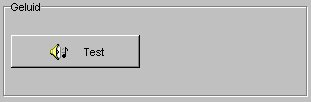
Test: Druk
op deze knop om het geluidsfragment te beluisteren. Het fragment wordt
geheel afgespeeld (en kan niet gestopt worden).
Stop
geluid
Het onmiddellijk stoppen van alle
nog afspelende geluidsobjecten.
Starttijd:
Tijdstip
waarop deze ITEM-regel uitgevoerd moet worden. De starttijd wordt opgegeven
in seconden vanaf ITEM-start (met 1 decimaal).
Opmerking:
bij elke wijziging van de starttijd worden de ITEM-regels opnieuw gesorteerd
op oplopende starttijd. ITEM-regels met eenzelfde starttijd moeten altijd
handmatig worden gesorteerd !
Alleen uitvoeren
bij vorig resultaat: hier kan worden ingesteld of deze itemregel altijd
moet worden uitgevoerd of afhankelijk van het resultaat van de vorige invoer.
Altijd:
deze itemregel wordt altijd uitgevoerd; Fout: deze itemregel wordt
alleen uitgevoerd wanneer het resultaat van het vorige invoerobject Fout
was; Goed: deze itemregel wordt alleen uitgevoerd wanneer het resultaat
van het vorige invoerobject Goed was; Alles goed: deze regel wordt
alleen uitgevoerd wanneer het resultaat van alle vorige invoerobjecten
in dit item Goed was.
ResultaatMemo:
Tonen (1e keer)
Het ResultaatMemo voor de 1e keer
in een test oproepen en instellen.
Het ResultaatMemo wordt in de Editor
weergegeven als een wit gekleurde rechthoek met een rode rand, en rode
diagonale streep en in 2 hoeken een vierkant blokje.
Starttijd:
Tijdstip
waarop deze ITEM-regel uitgevoerd moet worden. De starttijd wordt opgegeven
in seconden vanaf ITEM-start (met 1 decimaal).
Opmerking:
bij elke wijziging van de starttijd worden de ITEM-regels opnieuw gesorteerd
op oplopende starttijd. ITEM-regels met eenzelfde starttijd moeten altijd
handmatig worden gesorteerd !
Beginpositie:
Na
indrukken van deze knop kunnen de positie en de afmetingen van het ResultaatMemo
ingesteld worden.
Het instelpaneel
wordt tijdelijk verkleind, zodat het gehele venster zichtbaar wordt. De
kleuren van het ResultaatMemo worden omgedraaid (rood wordt wit en omgekeerd).
In 2 hoeken is een vierkant blokje zichtbaar. Wanneer met de linker muistoets
op een vierkant blokje wordt geklikt, dan kan de betreffende hoek worden
versleept naar een andere positie (linker muistoets ingedrukt houden en
dan de muis bewegen). Zo kunnen de positie en de afmetingen van het ResultaatMemo
naar wens worden ingesteld.
Stoppen met
instellen van de beginpositie: klik met de muis op de achtergrond buiten
het gebied van het ResultaatMemo òf op de knop Einde van het instelpaneel.
Het instelpaneel verschijnt dan weer.
Alleen uitvoeren
bij vorig resultaat: hier kan worden ingesteld of deze itemregel altijd
moet worden uitgevoerd of afhankelijk van het resultaat van de vorige invoer.
Altijd:
deze itemregel wordt altijd uitgevoerd; Fout: deze itemregel wordt
alleen uitgevoerd wanneer het resultaat van het vorige invoerobject Fout
was; Goed: deze itemregel wordt alleen uitgevoerd wanneer het resultaat
van het vorige invoerobject Goed was; Alles goed: deze regel wordt
alleen uitgevoerd wanneer het resultaat van alle vorige invoerobjecten
in dit item Goed was.
SPECIFIEKE
INSTELLINGEN
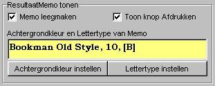
Memo leegmaken:
De inhoud van het memo wissen.
Toon knop
afdrukken: De knop Afdrukken zichtbaar maken op het memo, zodat de
actuele inhoud van het memo op elk gewenst moment kan worden afgedrukt.
Achtergrondkleur
instellen: De achtergrondkleur van het memo instellen.
Lettertype
instellen: Het gewenste lettertype van het memo instellen. Ingesteld
kan worden: het lettertype, de tekenstijl (standaard, cursief, vet, vet
cursief), de grootte (punten), effecten (doorhalen, onderstrepen, kleur).
Achtergrondkleur
en Lettertype van Memo: De actuele instellingen van de achtergrondkleur
en het lettertype. De achtergrondkleur in dit vak is de ingestelde achtergrondkleur
van het memo. De tekst van de instellingen in dit vak wordt weergegeven
met de gekozen lettertype-instellingen.
ResultaatMemo:
Tonen (opnieuw)
Het ResultaatMemo opnieuw oproepen
met dezelfde instellingen zoals eeder in een test werd ingesteld.
Starttijd:
Tijdstip
waarop deze ITEM-regel uitgevoerd moet worden. De starttijd wordt opgegeven
in seconden vanaf ITEM-start (met 1 decimaal).
Opmerking:
bij elke wijziging van de starttijd worden de ITEM-regels opnieuw gesorteerd
op oplopende starttijd. ITEM-regels met eenzelfde starttijd moeten altijd
handmatig worden gesorteerd !
Alleen uitvoeren
bij vorig resultaat: hier kan worden ingesteld of deze itemregel altijd
moet worden uitgevoerd of afhankelijk van het resultaat van de vorige invoer.
Altijd:
deze itemregel wordt altijd uitgevoerd; Fout: deze itemregel wordt
alleen uitgevoerd wanneer het resultaat van het vorige invoerobject Fout
was; Goed: deze itemregel wordt alleen uitgevoerd wanneer het resultaat
van het vorige invoerobject Goed was; Alles goed: deze regel wordt
alleen uitgevoerd wanneer het resultaat van alle vorige invoerobjecten
in dit item Goed was.
ResultaatMemo:
Verbergen
Het ResultaatMemo verbergen.
Starttijd:
Tijdstip
waarop deze ITEM-regel uitgevoerd moet worden. De starttijd wordt opgegeven
in seconden vanaf ITEM-start (met 1 decimaal).
Opmerking:
bij elke wijziging van de starttijd worden de ITEM-regels opnieuw gesorteerd
op oplopende starttijd. ITEM-regels met eenzelfde starttijd moeten altijd
handmatig worden gesorteerd !
Alleen uitvoeren
bij vorig resultaat: hier kan worden ingesteld of deze itemregel altijd
moet worden uitgevoerd of afhankelijk van het resultaat van de vorige invoer.
Altijd:
deze itemregel wordt altijd uitgevoerd; Fout: deze itemregel wordt
alleen uitgevoerd wanneer het resultaat van het vorige invoerobject Fout
was; Goed: deze itemregel wordt alleen uitgevoerd wanneer het resultaat
van het vorige invoerobject Goed was; Alles goed: deze regel wordt
alleen uitgevoerd wanneer het resultaat van alle vorige invoerobjecten
in dit item Goed was.
Wachttijd
vast/random
Een vaste of random tijd wachten
tijdens de uitvoer van een item.
Bij een vaste tijd wordt de uitvoer
van een item gedurende de ingestelde vaste tijd gestopt.
OPMERKING: Een vaste wachttijd
kan ook worden verkregen door bij de starttijd van een itemregel waarvóór
moet worden gewacht de starttijd later in te stellen dan de starttijd van
de vorige itemregel (wanneer een itemregel start op 5 sec en de vorige
itemregel start op 3,5 sec dan wordt tussen beide itemregels 1,5 sec gewacht).
Bij een random tijd wordt een willekeurige
tijd gewacht (maar de wachttijd ligt altijd tussen de opgegeven minimale
tijd en maximale tijd).
Starttijd:
Tijdstip
waarop deze ITEM-regel uitgevoerd moet worden. De starttijd wordt opgegeven
in seconden vanaf ITEM-start (met 1 decimaal).
Opmerking:
bij elke wijziging van de starttijd worden de ITEM-regels opnieuw gesorteerd
op oplopende starttijd. ITEM-regels met eenzelfde starttijd moeten altijd
handmatig worden gesorteerd !
Alleen uitvoeren
bij vorig resultaat: hier kan worden ingesteld of deze itemregel altijd
moet worden uitgevoerd of afhankelijk van het resultaat van de vorige invoer.
Altijd:
deze itemregel wordt altijd uitgevoerd; Fout: deze itemregel wordt
alleen uitgevoerd wanneer het resultaat van het vorige invoerobject Fout
was; Goed: deze itemregel wordt alleen uitgevoerd wanneer het resultaat
van het vorige invoerobject Goed was; Alles goed: deze regel wordt
alleen uitgevoerd wanneer het resultaat van alle vorige invoerobjecten
in dit item Goed was.
SPECIFIEKE
INSTELLINGEN
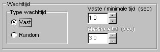
Type wachttijd:
Hier kan worden gekozen voor een vaste wachttijd (die gespecificeerd moet
worden in het vak Vaste / minimale tijd) of een random tijd (hierbij
moeten de minimale en maximale wachttijd worden gespecificeerd in de vakken
Vaste
/ minimale tijd resp. Maximale tijd).
Vaste /
minimale tijd: De tijd kan worden ingesteld in eenheden van 100 milliseconde.
Maximale
tijd: De tijd kan worden ingesteld in eenheden van 100 milliseconde.
Instelling
Early Responstijd
De Early Responstijd instellen.
Deze wordt na starten van een test altijd standaard ingesteld op 0 ms.
Tijdens de uitvoer van een test kan deze tijd op een andere waarde worden
ingesteld.
Starttijd:
Tijdstip
waarop deze ITEM-regel uitgevoerd moet worden. De starttijd wordt opgegeven
in seconden vanaf ITEM-start (met 1 decimaal).
Opmerking:
bij elke wijziging van de starttijd worden de ITEM-regels opnieuw gesorteerd
op oplopende starttijd. ITEM-regels met eenzelfde starttijd moeten altijd
handmatig worden gesorteerd !
Alleen uitvoeren
bij vorig resultaat: hier kan worden ingesteld of deze itemregel altijd
moet worden uitgevoerd of afhankelijk van het resultaat van de vorige invoer.
Altijd:
deze itemregel wordt altijd uitgevoerd; Fout: deze itemregel wordt
alleen uitgevoerd wanneer het resultaat van het vorige invoerobject Fout
was; Goed: deze itemregel wordt alleen uitgevoerd wanneer het resultaat
van het vorige invoerobject Goed was; Alles goed: deze regel wordt
alleen uitgevoerd wanneer het resultaat van alle vorige invoerobjecten
in dit item Goed was.
SPECIFIEKE
INSTELLINGEN
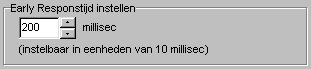
Early Responstijd
instellen: De tijd kan worden ingesteld in eenheden van 10 milliseconde.
Stop
item
Het onmiddellijk stoppen van de
uitvoer van het item.
Starttijd:
Tijdstip
waarop deze ITEM-regel uitgevoerd moet worden. De starttijd wordt opgegeven
in seconden vanaf ITEM-start (met 1 decimaal).
Opmerking:
bij elke wijziging van de starttijd worden de ITEM-regels opnieuw gesorteerd
op oplopende starttijd. ITEM-regels met eenzelfde starttijd moeten altijd
handmatig worden gesorteerd !
Alleen uitvoeren
bij vorig resultaat: hier kan worden ingesteld of deze itemregel altijd
moet worden uitgevoerd of afhankelijk van het resultaat van de vorige invoer.
Altijd:
deze itemregel wordt altijd uitgevoerd; Fout: deze itemregel wordt
alleen uitgevoerd wanneer het resultaat van het vorige invoerobject Fout
was; Goed: deze itemregel wordt alleen uitgevoerd wanneer het resultaat
van het vorige invoerobject Goed was; Alles goed: deze regel wordt
alleen uitgevoerd wanneer het resultaat van alle vorige invoerobjecten
in dit item Goed was.
Sneller
werken met grafische objecten
Er zijn enkele functies ingebouwd,
waardoor de instellingen van grafische objecten sneller uitgevoerd kunnen
worden.
Wanneer 1x op een zichtbaar grafisch
object wordt geklikt, waarvan de corresponderende ITEM-regel
niet is ingesteld (dus de hotspot is niet zchtbaar op het betreffende grafische
object) dan wordt automatisch de bijbehorende ITEM-regel
opgezocht en zichtbaar gemaakt op het Editpaneel. Ook de hotspot wordt
dan zichtbaar in de rechter onderhoek van het grafische object.
Wordt 1x geklikt (met de linker
muistoets) op een grafisch object, waarvan op dat moment de corresponderende
ITEM-regel
zichtbaar is op het Editpaneel (dus waarop de hotspot zichtbaar is), dan
heeft dat dezelfde functie als klikken op de knop Beginpositie op
het Editpaneel.
Wordt 1x geklikt (met de rechter
muistoets) op een grafisch object, waarvan op dat moment de corresponderende
ITEM-regel
zichtbaar is op het Editpaneel (dus waarop de hotspot zichtbaar is), dan
heeft dat dezelfde functie als klikken op de knop Eindpositie op
het Editpaneel.
In beide gevallen wordt het Editpaneel
verkleind en kunnen de gewenste begin- of eindpositie en de afmetingen
van het object worden ingesteld.
Het instellen hiervan wordt beëindigd
door te klikken op een vrij deel van de achtergrond òf op de knop
Einde van het Editpaneel òf op een ander grafisch object (deze wordt
dan geselecteerd en de bijbehorende
ITEM-regel
wordt opgezocht en ingesteld).
© Instrumentele Dienst,
GvV, bijgewerkt op 17-10-2002.